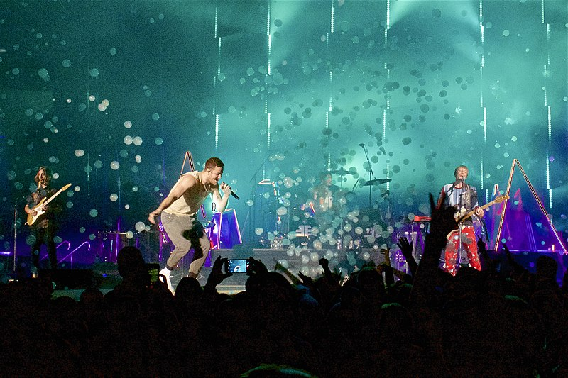

Історія
Ранні роки (2008—2011)
У 2008 році вокаліст Ден Рейнольдс познайомився із ударником Ендрю Толманом в Університеті Брігама Янга, де
обидва навчалися. Рейнольдс і Толман запросили Ендою Бека, Дейва Лемке і Аврору Флоренс грати на гітарі,
бас-гітарі і фортепіано, відповідно, створивши так колектив. Назва гурту є анаграмою вислову Ragged Insomnia
(укр. Рване безсоння), значення якої знають лише учасники гурту. Уп'ятьох вони представили міні-альбом
«Speak to Me» того ж року, і у цьому ж, 2008, році Бек і Флоренс покинули колектив. У 2009 році Толман
домовився зі своїм другом Вейном Сермоном, який закінчив музичний коледж Берклі, грати на гітарі, а дещо
пізніше переконав свою дружину Бріттані співати на бек-вокалі та грати на клавішних. Після цих змін колектив
знову почав давати концерти. Лемке незабаром покинув колектив, тому Сермон запросив ще одного студента із
коледжу Берклі, Бена МакКі, стати їхнім бас-гітаристом. Музиканти відіграли багато та набрались досвіду в
рідному місті Прово, штат Юта, перш ніж переїхали до Лас-Вегаса, рідного міста Дена Рейнольдса, де записали та
видали свої перші три міні-альбоми.
Перші два мініальбоми Imagine Dragons та Hell and Silence були
представлені 2010 року, обидва записані на Battle Born Studios у Лас-Вегасі. Колектив повернувся до
цієї студії 2011 року і опісля представив третій мініальбом It's Time, після чого підписали контракт із лейблом
Interscope.
Місцеві нагороди включно із «найкращим альбомом 2011 року» (Vegas SEVEN), «найкращий
місцевий інді гурт 2010 року» (Las Vegas Weekly), хедлайнер Vegas Music Summit задали позитивний напрямок
розвитку гурту. В листопаді 2011 року підписали контракт із лейблом Interscope та розпочали роботу з продюсером
Alex da Kid. Ще до початку роботи з лейблом подружжя Толманів покинуло колектив, а на заміну їм прийняли
Дена Платцмана на запрошення Бена МакКі, а також Терезу Фламініо на клавішні.
Night Visions та міжнародний успіх (2012—2014)
Тереза Фламініо покинула Imagine Dragons на початку 2012 року. Музиканти розпочали активно працювати із
продюсером Alex da Kid і разом записали свою першу роботу на лейблі. Мініальбом Continued Silence представили
14 лютого 2012 року у цифровому форматі, і згодом платівка сягнула 40 місця у американському чарті Billboard
200. Гурт представив ще один мініальбом Hear Me у 2012 році.
Незабаром було випущено сингл «It's Time», який
досяг 15 позиції у Billboard Hot 100. Музичне відео на цю композицію було представлено 17 квітня 2012 року і
транслювалось по філіях каналу MTV. Згодом цю роботу номінували на MTV Video Music Award у категорії «найкраще
рок-відео». Сингл став двічі платиновим у США.
Гурт закінчив запис свого дебютного альбому Night Visions
влітку 2012 року на Studio X у Palms Casino Resort і представив його у США 4 вересня 2012 року. Платівка
досягла 2 позиції у Billboard 200 із 83 000 проданих копій протягом першого тижня, що стало найкращим
показником для дебютного рок-альбому, починаючи з 2006 року. Платівка очолила Billboard чарти альтернативних і
рок альбомів, а також увійшла в першу десятку в таких країнах, як Австралія, Австрія, Канада, Данія, Німеччина,
Ірландія, Норвегія, Португалія, Шотландія, Іспанія та Велика Британія. Альбом отримав Billboard Music Award як
найкращий рок-альбом і був номінований на Juno Award for International Album of the Year. Night Visions став
«платиновим» у Австралії, Австрії, Бразилії, Канаді, Мексиці, Новій Зеландії, Польщі, Португалії, Швеції,
Швейцарії та Великій Британії. Три композиції з альбому увійшли у топ 40 Billboard, 4 композиції — у Top 40
ARIA та 5 — у UK Singles Chart.
Гурт під час турне у 2013 році.
Другий сингл альбому «Radioactive» досяг
вершини у чарті Billboard серед альтернативних і рок пісень та очолив шведський чарт синглів. Композиція
перебувала на вершині чарту Hot Rock Songs упродовж 23 тижнів і стала найбільшим хітом 2013 року. Rolling Stone
назвали її «рок-хітом року». Ця пісня стала лідером із прослуховування у сервісі Spotify у США. «Radioactive»
отримав нагороду Греммі як «пісня року» та «найкращий рок-перформенс» на 56 церемонії нагородження. У 2015 році
сингл став «діамантовим» у США, тобто на той час було продано понад 10 млн копій запису. Третій сингл «Demons»
очолив чарт Billboard серед поп пісень і досяг 6 позиції у Billboard Hot 100 із загальним тиражем 5 млн
проданих копій у США.
Billboard назвав Imagine Dragons «найяскравішою новою зіркою 2012 року» та пізніше
«проривом 2013 року». У 2014 році гурт переміг у Billboard Music Awards у категоріях «найкращий дует/гурт»,
«найкращий виконавець із Top Hot 100» та «найкращий рок-виконавець». Amazon назвали Imagine Dragons «улюбленим
рок-виконавцем 2012 року».
У 2013 році гурт повернувся до Європи та Північної Америки із Night Visions
туром. Imagine Dragons анонсували 13 додаткових літніх концертів у США, усі квитки на які згодом було продано.
Гурт також анонсував North America Amphitheatre тур та підтвердив, що не може виступити як додатковий гурт для
Muse.
13 квітня 2013 року представив дебютний концертний альбом «Live at Independent Records»
Smoke + Mirrors (2014—2016)
Під час виступу на фестивалі Lollapalooza у Бразилії, що був останнім виступом Into the Night туру, гурт
заявив, що йде на невеликий відпочинок. Завершення туру означало закінчення циклу, присвяченому альбому Night
Visions. Вокаліст гурту Ден Рейнольдс жартував про Night Visions цикл, що «ми завжди пишемо у дорозі, (тому)
другий альбом вийде, якщо ми не помремо у 27-річному віці. Сподіваюсь, що ми не помремо і представимо другий
альбом. Я не знаю, коли це станеться, але це може статися».
Вже із початку Night Visions туру гурт записував
новий матеріал для наступного альбому, і ще до початку роботи у студії було записано 50 демоматеріалів. Ці
демозаписи Рейнольдс описував як «однозначно інші», додаючи, що «це все ще Imagine Dragons, але потрібно
зробити ще багато роботи над матеріалом нам як гурту». Ударник Ден Платцман додав, що гурт критично ставиться
до свої робіт і що «немає місця для зовнішнього тиску». В інтерв'ю журналу Rolling Stone Рейнольдс заявив, що
наступний альбом буде «іншим», ніж Night Visions, додавши, що «запис буде більш роковим» порівняно з
попередньою платівкою.
Перед виходом альбому Imagine Dragons представили декілька синглів з інших проектів,
включно із піснею «Battle Cry» для фільму «Трансформери: Час вимирання» та піснею «Warriors» для чемпіонату
світу з League of Legends 2014.
Дебютний сингл із нової платівки «I Bet My Life» було представлено 27 жовтня
2014 року. 17 лютого 2015 року гурт представив свій другий повноформатний альбом Smoke + Mirrors та відправився
у тур Північною Америкою. Під час цього туру було представлено два неальбомних сингли: 26 серпня 2015 року —
«Roots», а 12 жовтня цього ж року — «I Was Me». Гурт записав також кавер на пісню «I Love You All the Time»
гурту Eagles of Death Metal на знак підтримки жертв терористичного акту в Парижі 13 листопада 2015 року.
Закінчився тур 5 лютого 2016 року в Амстердамі.
В інтерв'ю Ден Рейнольдс заявив журналу Billboard, що гурт
бере перерву на весь 2016 рік. Гурт представив концертний фільм «Imagine Dragons In Concert: Smoke + Mirrors»,
показ якого відбувався лише одного вечора у вибраних кінотеатрах. 28 квітня відбувся реліз пісні «Not Today» із
саундтреку до фільму «До зустрічі з тобою». Гурт також з'явився у саундтреку до ще одного фільму «Загін
самогубців» у пісні «Sucker For Pain» разом із виконавцями Lil Wayne, Wiz Khalifa, Logic, Ty Dolla Sign та X
Ambassadors. 28 листопада 2016 року Imagine Dragons записали пісню «Levitate» для фільму «Пробудження».
Evolve (2017—2020)
8 травня 2017 року гурт випустив сингл «Whatever It Takes» і анонсував вихід нового альбому Evolve (назва
стилізовано як ƎVOLVE), реліз якого відбувся 23 червня 2017 року. В день виходу альбому було оголошено про
турне на його підтримку. Того ж дня було оголошено тур на підтримку альбому. Тур проходив у 33 країнах з
вересня 2017 року по вересень 2018 року.
Сингл «Believer» здобув перемогу в номінації «Краща
рок/альтернатива пісня» на церемонії «Teen Choice Awards», яка відбулася 14 серпня 2017 року. 27 грудня 2017
гурт оголосив про виступ у Києві на НСК «Олімпійський».
Пісня отримала нагороду MTV Video Music Award за
найкраще рок-відео у 2018 році. 14 лютого 2018 року Imagine Dragons анонсували новий сингл «Next to Me» у
Twitter. Пісня була випущена в рамках перевидання Evolve 21 лютого 2018 року
12 червня 2018 року Imagine
Dragons анонсували новий сингл у співпраці з Kygo під назвою «Born to Be Yours» у Twitter. Реліз пісні відбувся
15 червня 2018 року. 2018 року Imagine Dragons також стали співвласниками кіберспортивної команди Rogue.
12
липня 2018 року Imagine Dragons анонсували новий сингл «Natural» у Twitter. Реліз пісні відбувся 17 липня 2018
року. Пісня була використана як гімн сезону студентського футболу ESPN 2018 року. Гурт завершив тур Evolve у
Тампі, штат Флорида, 10 серпня. 18 вересня 2018 року Imagine Dragons анонсували новий сингл «Zero», який вийшов
наступного дня. Він був використаний у фінальних титрах мультфільму «Ральф-руйнівник 2: Інтернетрі» студії Walt
Disney Animation Studios.
3 жовтня 2018 року Imagine Dragons анонсували свій четвертий студійний альбом
«Origins», який вийшов 9 листопада 2018 року. «Natural» і «Zero» стали лід-синглами з альбому, а «Born to Be
Yours» увійшла до міжнародного делюкс-видання альбому. Гурт описав цей альбом як альбом-сестру своєї
попередньої роботи Evolve. 31 жовтня 2018 року Imagine Dragons випустили третій сингл з альбому,
«Machine».Нарешті, 6 листопада 2018 року Imagine Dragons випустили четвертий сингл альбому, «Bad Liar». Origins
дебютував на другому місці в США, що зробило його четвертим альбомом з п'ятірки кращих. Він увійшов до першої
десятки в багатьох країнах, але отримав змішані відгуки від критиків.
7 січня 2019 року Imagine Dragons
виступили у перерві матчу Чемпіонату з футболу серед студентів 2019 року. Гурт виконав пісні «Natural», «Bad
Liar», «Thunder» та спеціальну версію «Believer» з репером Ліл Вейном. Нова версія пісні була випущена на
стрімінгових платформах наступного дня.
У червні 2019 року компанія Beat Games випустила платний
завантажуваний контент (DLC) для ритм-гри віртуальної реальності Beat Saber під назвою «Imagine Dragons Music
Pack», до якого увійшли десять пісень гурту Imagine Dragons.
20 червня 2019 року Imagine Dragons випустили
нову версію «Birds» за участю італійської співачки Елізи як п'ятий і останній сингл з альбому Origins. 23 липня
2019 року вийшов анімаційний кліп на оригінальну версію пісні.
У грудні 2019 року Рейнольдс оголосив, що
бере перерву у продюсуванні та написанні музики, щоб зосередитися на батьківстві.
20 січня 2020 року гурт
випустив кліп на пісню «Nothing Left to Say», пісню з дебютного альбому Night Visions.
2021 — тепер (Mercury— Acts 1 & 2)
8 березня 2021 року Imagine Dragons оголосили про вихід двох синглів,
«Follow You» і «Cutthroat», які вийшли 12 березня.
29 червня 2021 року гурт анонсував пісню «Wrecked», а
днем пізніше — передзамовлення на п'ятий студійний альбом Mercury — Act 1. 2 липня 2021 року пісня вийшла. 3
вересня Mercury — Act 1 вийшов разом із синглом «Monday». Як і попередні роботи гурту, альбом був неоднозначно
сприйнятий критиками. Він дебютував на дев'ятому місці в США. Реліз альбому збігся з оголошенням туру на його
підтримку.
У жовтні гурт перевипустив свої перші три розширені п'єси на стрімінгових сервісах і в цифрових
магазинах. Кожен міні-альбом містить раніше невиданий бонус-трек. Також 28 жовтня гурт випустив сингл «Enemy»
за участю репера J.I.D, який став частиною саундтреку до мультсеріалу «Arcane» на Netflix. Це вже друга спільна
робота Imagine Dragons і League of Legends, після «Warriors».
Незабаром після виходу «Mercury — Act 1» гурт
почав поширювати чутки про наступний альбом, який також мав би бути спродюсований Рубіном. У січні 2022 року
Рейнольдс заявив, що альбом «майже готовий» і буде випущений після першого етапу туру Мерк'юрі. Тур розпочався
6 лютого в Маямі і завершився 15 вересня в Лос-Анджелесі.
11 березня 2022 року гурт випустив сингл «Bones»,
який став лід-синглом до шостого студійного альбому Mercury — Act 2. 6 квітня гурт оголосив, що Mercury — Act 2
буде випущений 1 липня 2022 року. 18-трековий альбом був випущений, як частина альбому-компіляції, що містить
обидва альбоми Mercury.
Гурт випустив ювілейне десятирічне розширене видання Night Visions 9 вересня 2022
року, до якого увійшли два раніше невидані демо «Love of Mine» і «Bubble». «Love of Mine» вийшов 2
вересня.
10 травня 2023 року гурт випускає відеокліп «Crushed» метою якого є нагадати, що в Україні все ще
триває повномасштабна війна. Його режисером став Тай Арнольд, друг UNITED24 і автор найпопулярніших відеокліпів
гурту.
14 липня 2023 року на YouTube вийшов концертний фільм «Imagine Dragons: Live in Vegas» від Hulu.
Фільм демонструє повний концерт гурту на стадіоні Allegiant у Лас-Вегасі 10 вересня 2022 року. Концертний
альбом з концерту вийшов 28 липня 2023 року. Їхнє виконання «Believer» було випущено в якості головного синглу
за два тижні до цього.
Склад
Поточні учасники
- Ден Рейнольдс — вокал, бас-барабан, малий барабан, акустична гітара (2008-теперішній час)
- Бен МакКі — бас-гітара, бек-вокал, клавішні, акустична бас-гітара, електрична мандоліна, бас-барабан (2009 — теперішній час)
- Вейн Сермон — гітара, альт, бек-вокал, том-том, акустична гітара, електрична мандоліна, бас-барабан (2009 — теперішній час)
- Ден Платцман — ударні, віолончель, бек-вокал, кахон, акустична гітара, малий барабан (2011 — теперішній час)
Колишні учасники
- Ендрю Толмен — ударна установка, вокал (2008—2011)
- Бріттані Толмен — піаніно, вокал (2009—2011)
Учасники турне
- Райан Волкер — клавішні, електрогітара, малий барабан, бек-вокал, акустична гітара, електрична мандоліна, синтезатор, бас-барабан, цимбали (2011 — теперішній час)
Дискографія
Студійні альбоми
- Night Visions (2012)
- Smoke + Mirrors (2015)
- Evolve (2017)
- Origins (2018)
- Mercury – Act 1 (2021)
- Mercury – Act 2 (2022)
Мініальбоми
- Imagine Dragons (1 вересня 2009)
- Hell and Silence (1 червня 2010)
- It's Time (12 березня 2011)
- Continued Silence (14 лютого 2012)
- Hear Me (25 листопада 2012)
Концертні тури
- Imagine Dragons on Tour (2011-12)
- Fall Tour 2012 (2012)
- Europe Tour 2012 (2012)
- Night Visions Tour (2013)
- Into The Night Tour (2014)
- Evolve Tour (2018)
- Mercury World Tour (2022)
Цікаві факти
Президент України Володимир Зеленський напередодні Дня Незалежності України нагородив увесь склад гурту орденом «За заслуги» ІІІ ступеня за значні особисті заслуги у зміцненні міждержавного співробітництва, підтримку державного суверенітету та територіальної цілісності України, вагомий внесок у популяризацію Української держави у світі
Підтримка України
23 липня 2022 року Imagine Dragons стали офіційними амбасадорами платформи UNITED24,
долучившись до збору коштів на автомобілі швидкої допомоги типу С — завдяки цим реанімобілям медики можуть
рятувати навіть важкопоранених. Загалом проект, анонсований у рамках Саміту перших леді та джентльменів, зібрав
понад 6 мільйонів доларів. За ці кошти придбали 92 автомобілі, які вже допомагають українським медикам у
польових умовах.
10 травня 2023 року гурт випустив відеокліп на пісню «Crushed». Постановщик кліпу — Тай Арнольд
(анг. Ty Arnold) розповідає реальну історію 14-річного хлопчика на ім'я Саша. Російські війська окупували його
село п'ять місяців, поки українські війська нарешті не звільнили його. Незважаючи на це, конфлікт залишив його
будинок, школу та околиці в руїнах. Від обстрілу він вижив, лише сховавшись у підземному сховищі. Візуалізація
детально описує його неймовірну історію наполегливості, коли він проходить крізь уламки. Він закінчується
кадром хлопця зі словами: «І, як і багато інших, Саша та його родина сподіваються відновити свій дім. Вони все
ще тут».